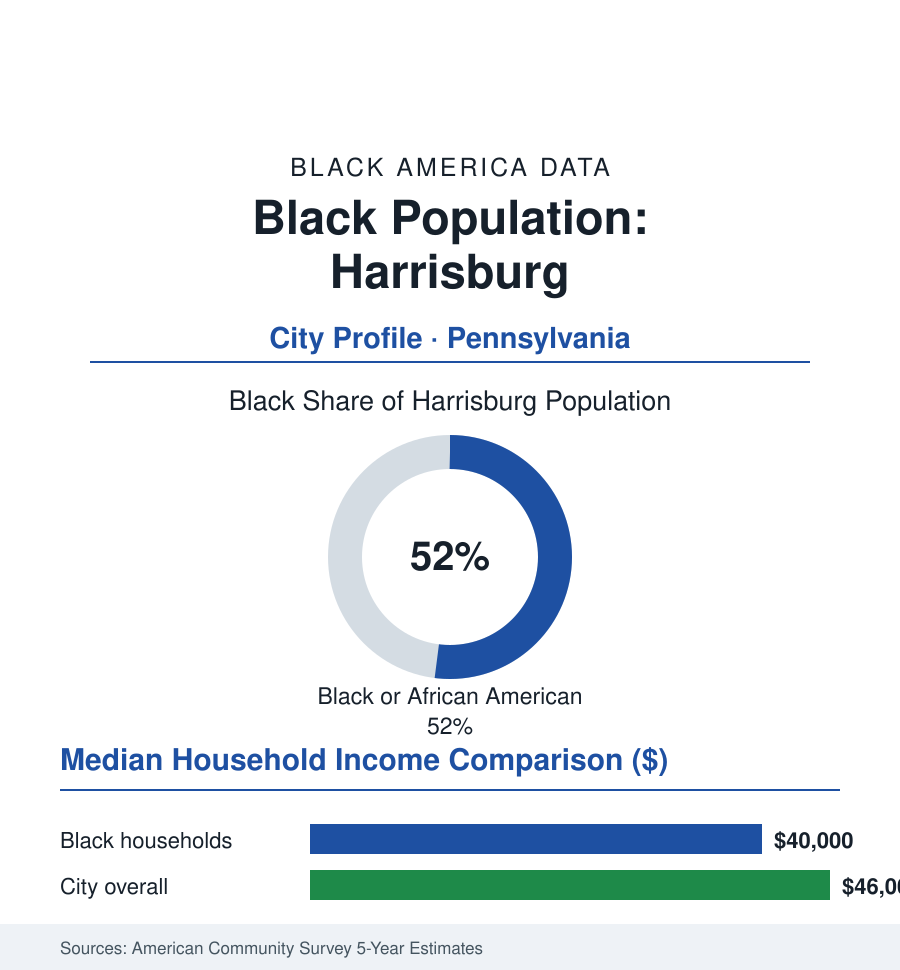

Black Cities
Black Harrisburg: 26,000 People in a Majority-Black State Capital
Harrisburg's Black community, about 26,000 and a majority of Pennsylvania's capital city, governs a capital from neighborhoods a freeway was driven through. The census portrait.

Harrisburg's Black community numbers approximately 26,000 people — a majority, about 52%, of Pennsylvania's capital city — one of the few state capitals in America where Black residents are the majority of the city proper, governing a small capital (50,000) embedded in a much larger, whiter metro, from neighborhoods that carry both a distinguished free-Black history and the state's most documented case of a freeway driven through a Black community's heart. This profile reads the capital's numbers.
The Old Eighth Ward and the Freeway
Harrisburg's Black history is older than the capital: the city's free Black community of the early republic (its churches and abolitionist networks of the Underground Railroad's Susquehanna crossing — the city a documented station, its Black residents' resistance to slave-catchers a matter of court record), centered by the twentieth century in the Eighth Ward — the neighborhood the historians call the city's Black heart: its churches, its businesses, its political clubs, its Lincoln School. The ward's destruction is the file's urban-renewal chapter in its purest documented form: the Capitol expansion and then the Harvey Taylor Bridge and Interstate 83 corridor clearances of the mid-century decades razed the Eighth Ward's blocks (the state itself later memorializing what it displaced — the Commonwealth's own markers on the site), scattering the community to the uptown and Allison Hill neighborhoods that hold it today. The state government that displaced them is also the community's economic engine: the capital's workforce — the Commonwealth's clerks, analysts, and administrators — recruited generations of Black Harrisburgers into the public tier (the state workforce's diversity data the region's standing table), the government payroll the city's Black middle class's foundation.
Majority Governance and the Fiscal File
A majority-Black electorate makes Harrisburg's politics the community's own: the mayor's office (held in the modern era by the city's first Black mayor's long tenure and his successors), a city council drawn substantially from the community, the school board of a district roughly three-quarters Black and Latino, and the county and state delegations. The city's modern data carry one of the nation's most extreme municipal-finance chapters: the incinerator-debt crisis that drove Harrisburg into state receivership in the early 2010s (the Act 47 and receiver years — the capital city of a commonwealth administered by an appointee, its assets sold, its recovery plan imposed) and the long climb out (the receiver's exit, the city's fiscal stabilization in the subsequent audits) — a governance file in which the majority-Black city's fiscal sovereignty was suspended and restored within a decade, the municipal-finance literature's case study, lived by 26,000 people as their city's daily administration. The school district's parallel file (state-appointed receivership of the schools in the late 2010s, the recovery plans, the funding data beside the suburban districts across the river and the highway) completes the sovereignty ledger the community reads with precision.
The Economic Ledger
The ACS data describe the small-capital economy: Black median household income around forty thousand dollars against a city median in the mid-forties — a narrower gap than this atlas's norm, the public payroll's compression visible in the numbers — with poverty still elevated (the Allison Hill concentration in the tract data) and homeownership in the middle ranges (Uptown's and the Hill's rowhome stock, the land-bank and CDC work on the vacant file). The workforce: the Commonwealth first (the capitol complex's thousands), the health systems (UPMC's and Penn State Health's regional operations), the schools and the city itself, warehousing along the interstates of the metro's logistics boom, and the retail of the suburban ring the residents' wages commute to. The reinvestment geography — the midtown and riverfront projects, the Broad Street Market's restoration, the state museum and archives as cultural anchors beside the community's own (the National Civil War Museum's contested narratives, the Black historical programming of the county societies) — distributes on the maps the equity reports draw, with the Eighth Ward's site itself now the argument's ground zero: the memorials rising where the neighborhood stood.
Reading Harrisburg's Numbers
Fifty-two percent of a state capital, a public payroll for a foundation, a freeway for a wound, and a receivership survived: Harrisburg is the atlas's portrait of Black political majority at municipal scale — proof that the community can hold a city's government entire, and the ledger of what the surrounding state can still do to the city's schools, debt, and ground. The capital is theirs. The data keep the receipts of what that has and hasn't meant.
More in Black Cities
Black Atlanta: Population, Distribution, and Growth of a Black Metropolis
Metro Atlanta holds more than two million Black residents — roughly one in three, second only to New York. The suburban distribution, migration history, and composition of Black Atlanta in the census data.
Black New York: The Largest Black Population in America
The New York metropolitan area holds about 3.4 million Black residents — more than any metro in the nation — and the city itself about two million. The census profile.
Black Washington: The District and the Metro
The Washington metro holds about 1.6 million Black residents, and the District itself — long a majority-Black city — now records a Black share near 41 percent. The census profile.
Source: U.S. Census Bureau, 2020 Census and American Community Survey 5-year estimates; City of Harrisburg; Pennsylvania State Archives and Dauphin County records.